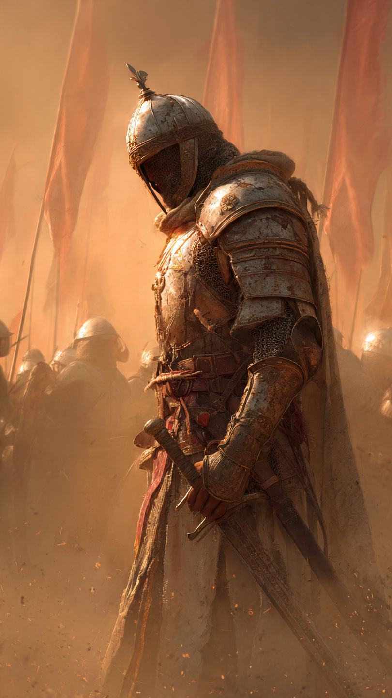
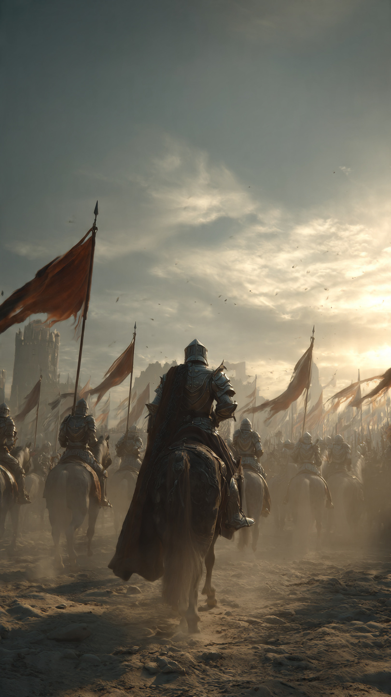

في صفحات التاريخ الإسلامي، ظهرت أسماء كثيرة اشتهرت بالشجاعة والقوة في ميادين القتال.
ومن بين هذه الأسماء جاء فارس عُرف بالذكاء والبأس والشجاعة...
إنه القعقاع بن عمرو التميمي.
كان القعقاع من قبيلة تميم، واشتهر بين المسلمين بأنه فارس لا يهاب المواجهات الصعبة.
لم تكن شجاعته فقط في قوته الجسدية، بل في سرعة تفكيره وقدرته على التصرف في المواقف الحرجة.
شارك القعقاع في أحداث مهمة في تاريخ المسلمين، وكان له حضور في المعارك التي احتاجت إلى رجال أصحاب ثبات وإقدام.
كان القادة يعرفون أن وجود رجل شجاع في الصفوف قد يرفع معنويات الجيش كله.
ومن أشهر ما رُوي عنه أنه كان صاحب تأثير كبير في المعارك، حتى قيل عنه:
"صوت القعقاع في الجيش خير من ألف رجل"
وهي عبارة تدل على مكانته وشجاعته، وليس المقصود بها حسابًا حرفيًا.
كان يعرف أن الفارس الحقيقي لا يعتمد على قوته فقط، بل على الإيمان والانضباط وحسن التصرف.
في زمن الخليفة أبي بكر الصديق رضي الله عنه، شارك القعقاع في حروب الردة، وكان من الرجال الذين ساهموا في إعادة الاستقرار.
ثم ظهر دوره في معارك كبيرة أخرى، وأصبح اسمه مرتبطًا بالشجاعة في كتب التاريخ.
لكن خلف هذه الشهرة كان هناك رجل يعلم أن النصر من عند الله، وأن الإنسان مهما كان قويًا يحتاج إلى التوفيق.
📷 الصورة رقم 1

ظهر اسم القعقاع بن عمرو بشكل أكبر في المعارك التي احتاج فيها المسلمون إلى رجال أصحاب شجاعة وثبات.
كان من الرجال الذين يدخلون المواقف الصعبة دون تردد.
في معركة القادسية ضد الفرس، كان المسلمون يواجهون جيشًا قويًا ومنظمًا.
وكانت المعركة من أصعب المواجهات في ذلك الوقت.
وصل القعقاع إلى أرض المعركة، وكان وجوده سببًا في رفع معنويات المسلمين.
فقد كان الجنود يرون فيه مثالًا للشجاعة والثقة.
لم يكن القعقاع يقاتل بحثًا عن الشهرة، بل كان يرى أن دوره هو الدفاع عن ما يؤمن به وخدمة جيشه.
كان يتحرك بحكمة، ويعرف أن الشجاعة ليست الاندفاع دون تفكير، بل اختيار الوقت والطريقة المناسبة.
ومع اشتداد المعركة، ثبت المسلمون أمام جيش الفرس، واستمر القتال أيامًا صعبة.
كانت مثل هذه المواقف تكشف معدن الرجال الحقيقي.
ففي أوقات الخوف يظهر من يثبت، ومن يملك القدرة على تشجيع من حوله.
وبقي القعقاع واحدًا من الرجال الذين ارتبط اسمهم بالإقدام والثبات.
ومع ذلك، كان يعرف أن القوة ليست ملكًا للإنسان وحده، وأن النصر بيد الله.
فالفارس الحقيقي يجمع بين الشجاعة والتواضع.
📷 الصورة رقم 2

بقي اسم القعقاع بن عمرو في كتب التاريخ مرتبطًا بالشجاعة والذكاء في المواقف الصعبة.
فقد كان مثالًا للفارس الذي يجمع بين القوة وحسن التصرف.
لم تكن قيمة القعقاع في قوته فقط، بل في روحه القيادية وقدرته على الثبات عندما يحتاج الناس إلى من يرفع معنوياتهم.
تعلم المسلمون من أمثال القعقاع أن النصر يحتاج إلى أسباب كثيرة:
الإيمان...
والتخطيط...
والشجاعة...
والعمل الجماعي.
كما تعلمنا قصته أن الإنسان لا يُقاس فقط بما يملكه من قوة، بل بما يقدمه في الأوقات التي تحتاج إلى التضحية والمسؤولية.
ورغم أن بعض التفاصيل التي وردت في كتب التاريخ عن القعقاع اختلف العلماء في توثيق بعضها، فإن صورته العامة بقيت صورة الفارس الشجاع في التراث الإسلامي.
لقد كان القعقاع رجلًا عرف قيمة الشجاعة، لكنه لم يجعلها سببًا للغرور.
بل كان يعلم أن كل قوة هي نعمة تحتاج إلى شكر.
وهكذا بقي اسمه رمزًا للفارس الذي لا يهرب من الصعوبات، ويقف مع الحق بما يستطيع.
⚔️📖 انتهت القصة 📖⚔️
العبرة:
الشجاعة الحقيقية ليست غياب الخوف، بل القدرة على فعل الصواب رغم صعوبة الموقف.